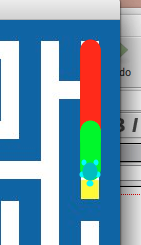
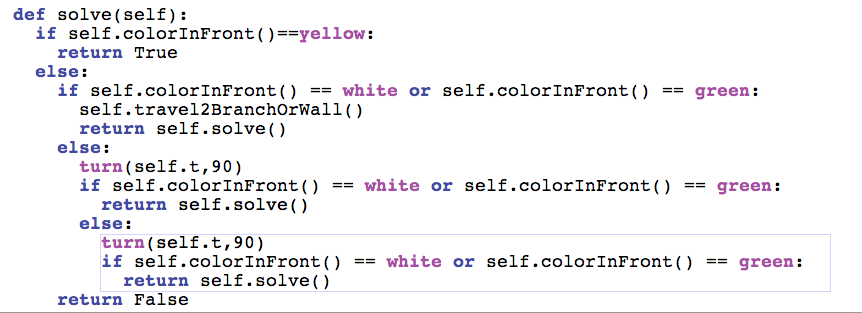
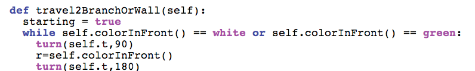

CSI 106 Muhlenberg College - Michael Toth
Page 20
| Look at the trail the turtle makes. even though this passes,
we still have a problem it seems.  The turtle should have tried the branch to the right after it hit the dead end going north. Instead it went straight and found the cheese. |
  |
| We
are overshooting the branch for some reason. Now this gets a
little complicated. Here's the testing code I wrote to figure out
what is going on. In using this code I found out what changes needed to be made to travel2BranchOrWall. |
 |